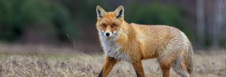

Fox

Fox is a common name for many species of carnivorous mammals belonging to the Canide family.Foxes
are small to medium-sized canids (slightli smaller than the median- sized domestic dog), characterized by possessing a long narrow snout, and a bushy tail(or brush).
Members of about 37 species are referred to as foxes, of which only 12 species.